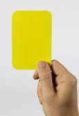
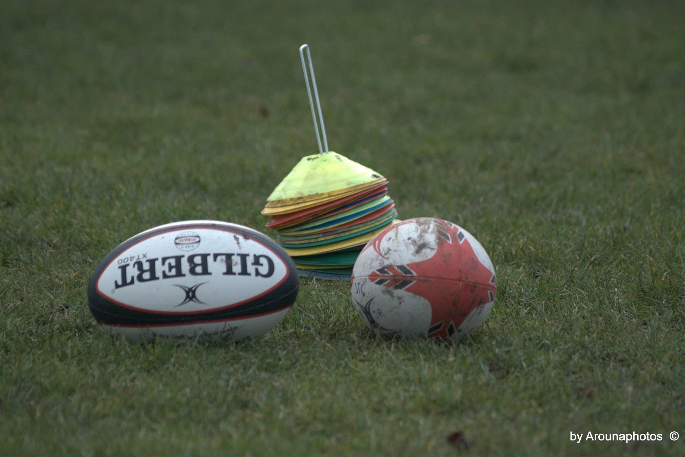
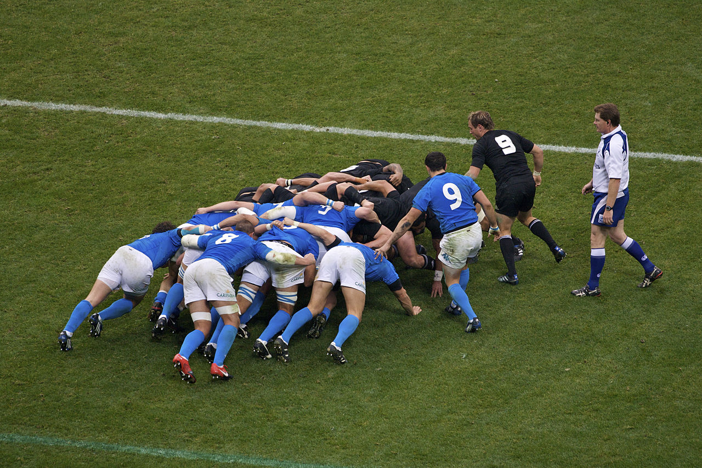
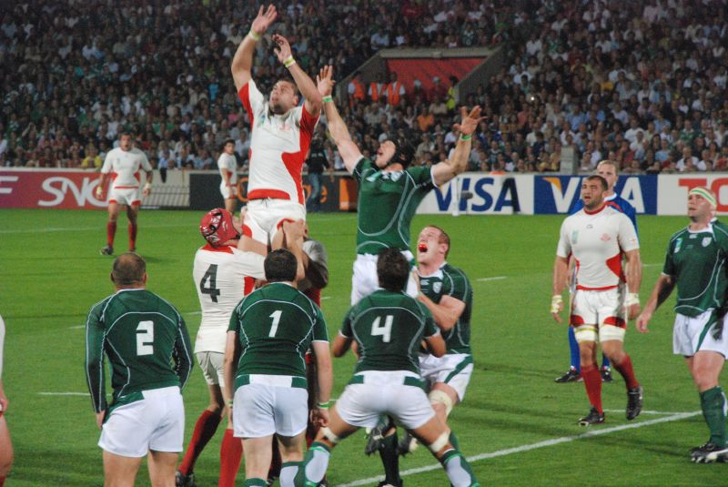

Det finns väldigt många regler i rugbu men det absolur viktigaste att komma ihåg är att domaren bestämer och det är inte aceptabelt att vara respektlös.
Rugby regler
Det finns hur mycket när det kommer till regler i Rugby så jag kommer bara lyfta fram grunderana
Först pratar vi om lite skillnader mellan rugby och amerikansk footboll så att ni inte blandar ihop dom. I rugby så får man bara pass bollen bakåt utan man kan bara föra bollen framåt genom att springa med den eller genom att sparka den. Sen har vi det med skydd, i rugby har du tandskydd och om du vill så kan du använda en scruncap vikjet er som en mössa med extra vaddbning vilker är en stor kontrast till amerikansk fotboll där dom har extremt mycket skydd pluss hjälm.
Nu går vi över i lite mer viktig fakta. Det finns som sagt olika sätt att spekla rugby och reglerna här kommer att vara för 15manna.Bollen som används i rugbyn är av en oval form. Planen är ungefät lila stor som en fotbollsplan med extra sträck utmarkerade. Något annat som är viktigt är tacklingar man får bara tackla bollinehavaren och man måste försöka greppa med armana runt spelaren och man får inte teckla förhögt. Matcherna varar i 80 minuter plus extra tid vilket tar slut när det blir en fastsituation.
'Sen kommer vi till dom fasta situationerna det finns några olika. Vi börjar med avspark detta sker genom att ett lag sparkar bollen till det andra och så sätts matchen igång.
Nästa tar vi en koll på en klunga vilket kan uppstå på många sätt men vanligast är när det blir en "knock-on" det vill säga när bollen tappas framåt. En klunga består av forwardsen och det som händer är att laget som har fått den tilldelad till säg får sätta in bollen i mitten vilket scrum-halfen gör och sedan försöker man vinna bollen genom att föra den till bakre delen och trycka bort det andra laget för at man vinner mark. Det finns mer regler om klungan men detta var det viktigaste.
Nästa är line-outs vilket uppstår när bollen går över sidlinjen. En lin.out består av ett antal forward vilket antalet kan variera. Det är oftast propsen som lyfter med t.ex med en flanker och ena locket som hoppar eftersom dom är längst. Dom två lagen ställer upp bredvid varandra och det lag som har fått inkastet kastar in mitt i mellan dom två lagen. Precis som i klungan så finns det mer regler men detta är basics.
Det var dom viktigadte delaran när det kommer till rugby regler och man kan alltid läsa på mer på World.rugby